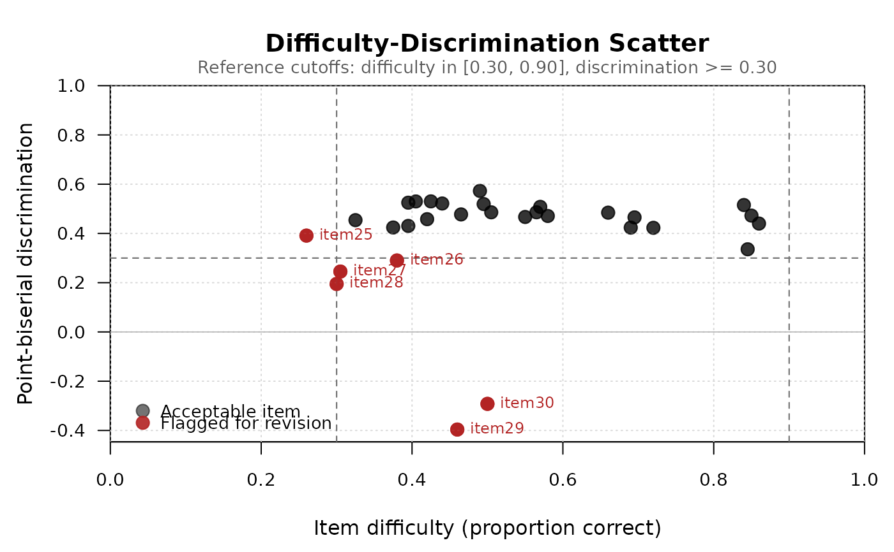
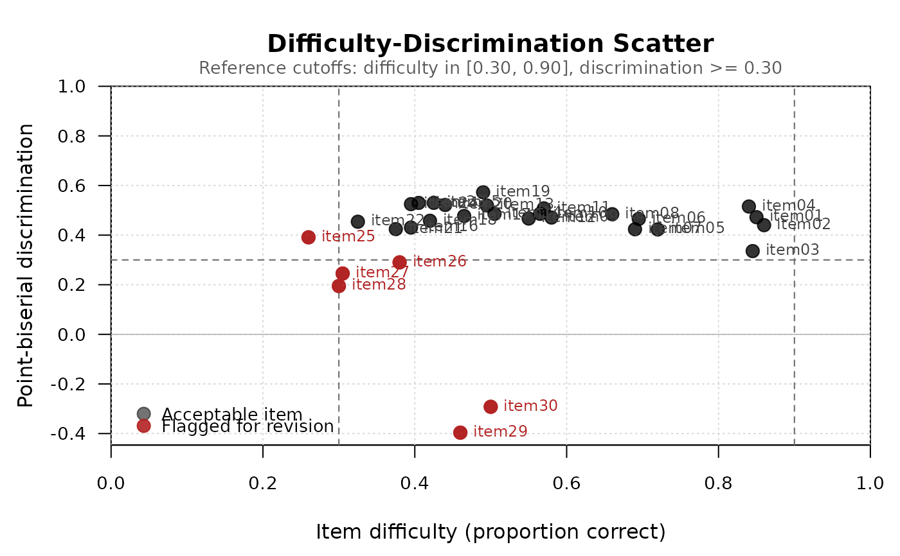
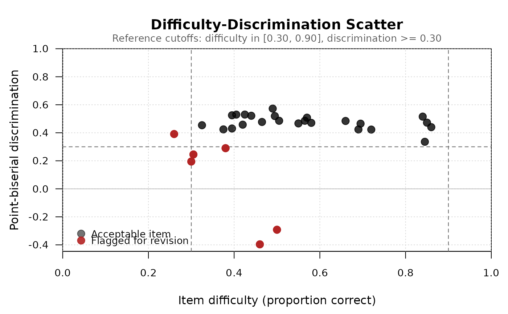

Plot a difficulty-discrimination scatter for an mcq_analysis object
Source:R/plot.mcq_analysis.R
plot.mcq_analysis.RdProduces the classical item quality map: a scatterplot of item difficulty (x-axis) against item discrimination (y-axis), with reference lines marking conventional adequacy cutoffs. Items in the upper-middle region (medium difficulty, high discrimination) are performing well; items in the lower regions are candidates for revision.
Arguments
- x
An object of class
mcq_analysis.- y
Ignored. Present for S3 compatibility.
- discrimination_metric
Which discrimination index to plot on the y-axis. One of
"point_biserial"(default) or"discrimination_index".- label
One of
"flagged"(default, label only problematic items),"all"(label every item), or"none"(no labels). Also acceptsTRUE(= "all") orFALSE(= "none") for backwards compatibility.- flag_threshold_difficulty
Numeric vector of length 2 giving the informative difficulty range. Default
c(0.30, 0.90).- flag_threshold_discrimination
Numeric. Discrimination cutoff below which an item is considered weak. Default 0.30.
- point_cex
Numeric. Point size. Default 1.4.
- label_cex
Numeric. Label text size. Default 0.75.
- ...
Additional graphical parameters passed to
plot().
Details
By default, only flagged items (those falling outside the conventional
adequacy region) are labeled, to keep the plot legible when many items
cluster in the acceptable region. Use label = "all" to label every
item, or label = "none" to suppress labels entirely.
Reference lines are drawn at conventional cutoffs from Ebel and Frisbie (1991): discrimination >= 0.30 (acceptable) and difficulty between 0.30 and 0.90 (informative range).
References
Ebel, R. L., & Frisbie, D. A. (1991). Essentials of educational measurement (5th ed.). Prentice Hall.
Examples
data(mcq_example)
result <- mcq_analysis(mcq_example$responses, mcq_example$key)
plot(result)

plot(result, label = "all")

plot(result, label = "none")
